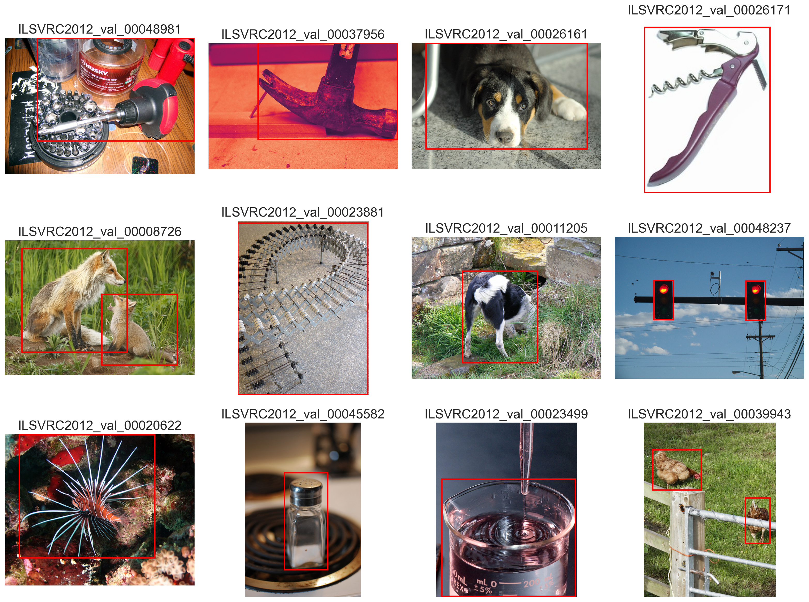
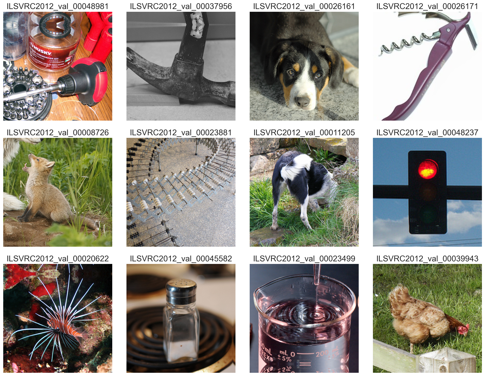

In this notebook we use the bounding boxes given with the Imagenet data set to generate a new sub-set. From the original data set Imagenet_full by only keeping the smallest square comprising the bounding boxe we generate Imagenet_bbox sub-set
[1]:
import retinoto_py as fovea
args = fovea.Params(batch_size=1, shuffle=False)
args
[1]:
Params(batch_size=1, num_workers=4, prefetch_factor=0, image_size=224, grid_size_ecc=161, grid_size_ang=309, do_mask=False, do_fovea=True, use_hexagonal_grid=True, rs_min=-3.5, rs_max=0.7, angle_start=-5.235987755982989, angle_margin=0.010166966516471823, mode='bilinear', padding_mode='zeros', model_name='convnext_base', num_epochs=20, subset_factor=1, optimizer_name='adamw', loss_name='CrossEntropyLoss', base_lr=1e-06, final_lr=1e-09, num_warmup_epochs=20, delta1=0.3, delta2=0.002, weight_decay=0.0001, label_smoothing=0.0005, do_full_training=True, do_augment=True, augment_proba=0.85, stochastic_depth_prob=0.6, seed=1998, shuffle=False, verbose=False)
reading localisation metadata¶
First for the ‘train’ dataset:
[2]:
folder = 'train'
annotation_file = args.DATAROOT / f'LOC_{folder}_solution.csv'
with open(annotation_file, 'r') as csv_file:
df_data = fovea.pd.read_csv(csv_file)
df_data.head()
[2]:
| ImageId | PredictionString | |
|---|---|---|
| 0 | n02017213_7894 | n02017213 115 49 448 294 |
| 1 | n02017213_7261 | n02017213 91 42 330 432 |
| 2 | n02017213_5636 | n02017213 230 104 414 224 |
| 3 | n02017213_6132 | n02017213 46 82 464 387 |
| 4 | n02017213_7659 | n02017213 103 66 331 335 |
[3]:
def get_boxes(df, value):
idx = list(df['ImageId'][df['ImageId'] == value].index)
bboxes = []
if idx:
for i in range(len(df["PredictionString"][idx[0]].split(' '))//5):
pos =(5*i)
bboxes.append({'xmin' : int(df["PredictionString"][idx[0]].split(' ')[1 + pos]),
'ymin' : int(df["PredictionString"][idx[0]].split(' ')[2 + pos]),
'xmax' : int(df["PredictionString"][idx[0]].split(' ')[3 + (5*i)]),
'ymax' : int(df["PredictionString"][idx[0]].split(' ')[4 + (5*i)])
})
return bboxes
[4]:
get_boxes(df_data, 'n02099849_2300')
[4]:
[{'xmin': 151, 'ymin': 146, 'xmax': 332, 'ymax': 333},
{'xmin': 7, 'ymin': 232, 'xmax': 331, 'ymax': 467}]
[5]:
get_boxes(df_data, 'n01440764_32420')
[5]:
[]
Now for the ‘val’ dataset:
[6]:
folder = 'val'
annotation_file = args.DATAROOT / f'LOC_{folder}_solution.csv'
with open(annotation_file, 'r') as csv_file:
df_data = fovea.pd.read_csv(csv_file)
df_data.head()
[6]:
| ImageId | PredictionString | origin_size | |
|---|---|---|---|
| 0 | ILSVRC2012_val_00048981 | n03995372 85 1 499 272 | (500, 360) |
| 1 | ILSVRC2012_val_00037956 | n03481172 131 0 499 254 | (500, 333) |
| 2 | ILSVRC2012_val_00026161 | n02108000 38 0 464 280 | (500, 334) |
| 3 | ILSVRC2012_val_00026171 | n03109150 0 14 216 299 | (225, 300) |
| 4 | ILSVRC2012_val_00008726 | n02119789 255 142 454 329 n02119789 44 21 322 ... | (500, 357) |
[7]:
get_boxes(df_data, 'ILSVRC2012_val_00026171')
[7]:
[{'xmin': 0, 'ymin': 14, 'xmax': 216, 'ymax': 299}]
[8]:
from pathlib import Path
# Répertoire des images de validation (adapter si nécessaire)
val_dir = args.DATAROOT / 'Imagenet_full' / 'val'
N_show = 12
# Choisir quelques images (ici les 8 premières ImageId présentes dans df_data)
image_ids = df_data['ImageId'].unique()[:N_show].tolist()
image_ids
[8]:
['ILSVRC2012_val_00048981',
'ILSVRC2012_val_00037956',
'ILSVRC2012_val_00026161',
'ILSVRC2012_val_00026171',
'ILSVRC2012_val_00008726',
'ILSVRC2012_val_00023881',
'ILSVRC2012_val_00011205',
'ILSVRC2012_val_00048237',
'ILSVRC2012_val_00020622',
'ILSVRC2012_val_00045582',
'ILSVRC2012_val_00023499',
'ILSVRC2012_val_00039943']
[17]:
from torchvision.io import read_image
from matplotlib.patches import Rectangle
from PIL import Image
import torch
n = len(image_ids)
cols = 4
rows = (n + cols - 1) // cols
fig, axes = fovea.plt.subplots(rows, cols, figsize=(4*cols, 4*rows))
axes = axes.flatten()
for ax_idx, imgid in enumerate(image_ids):
ax = axes[ax_idx]
# trouver le fichier d'image correspondant (quelque soit l'extension)
files = list(val_dir.rglob(f'{imgid}.*'))
if not files:
ax.set_title(f'{imgid} not found')
ax.axis('off')
continue
img_path = files[0]
# img = Image.open(img_path).convert('RGB')
img = read_image(img_path).float() / 255.0
three, H, W = img.shape
ax.imshow(torch.movedim(img, (1, 2, 0), (0, 1, 2)).numpy())
# récupérer les boîtes depuis df_data via la fonction get_boxes définie plus haut
boxes = get_boxes(df_data, imgid)
for b in boxes:
xmin, ymin, xmax, ymax = b['xmin'], b['ymin'], b['xmax'], b['ymax']
# xmin, ymin, xmax, ymax = 0, 0, W, H
w = xmax - xmin
h = ymax - ymin
rect = Rectangle((xmin, ymin), w, h, linewidth=2, edgecolor='red', facecolor='none')
ax.add_patch(rect)
ax.set_title(imgid)
ax.axis('off')
# masquer les axes restants si nécessaire
for i in range(len(image_ids), rows*cols):
axes[i].axis('off')
fovea.plt.tight_layout()
fovea.plt.show()

Building the new dataset¶
[10]:
fig, axes = fovea.plt.subplots(rows, cols, figsize=(4*cols, 4*rows))
axes = axes.flatten()
rel_margin = .1 # margin computed relative to the diagonal length of the bnounding box
from torchvision.io import read_image
for ax_idx, imgid in enumerate(image_ids):
ax = axes[ax_idx]
# trouver le fichier d'image correspondant (quelque soit l'extension)
files = list(val_dir.rglob(f'{imgid}.*'))
if not files:
ax.set_title(f'{imgid} not found')
ax.axis('off')
continue
img_path = files[0]
image = read_image(img_path)
print(image.shape)
if image.shape[0] == 1: image = image.repeat(3, 1, 1)
three, H, W = image.shape
boxes = get_boxes(df_data, imgid)
b = boxes[0]
xmin, ymin, xmax, ymax = b['xmin'], b['ymin'], b['xmax'], b['ymax']
y_center, x_center = (ymin+ymax)//2, (xmin+xmax)//2
box_size = min((H, W))
box_size = min((box_size, int(1.3*max(((xmax-xmin), (ymax-ymin))))))
image_fix = fovea.fixate(image, y_center, x_center, box_size)
ax.imshow(fovea.torch.movedim(image_fix, (1, 2, 0), (0, 1, 2)).numpy())
ax.set_title(imgid)
ax.axis('off')
# masquer les axes restants si nécessaire
for i in range(len(image_ids), rows*cols):
axes[i].axis('off')
fovea.plt.tight_layout()
fovea.plt.show()
torch.Size([3, 360, 500])
torch.Size([1, 333, 500])
torch.Size([3, 334, 500])
torch.Size([3, 300, 225])
torch.Size([3, 357, 500])
torch.Size([3, 500, 375])
torch.Size([3, 375, 500])
torch.Size([3, 375, 500])
torch.Size([3, 400, 500])
torch.Size([3, 500, 334])
torch.Size([3, 500, 404])
torch.Size([3, 500, 378])

[11]:
def clean_list(list_dir, EXCLUDED_FILES={'.DS_Store', '.ipynb_checkpoints'}):
return [ p for p in list_dir if p.is_file() and p.name not in EXCLUDED_FILES ]
FULL_DATA_DIR = args.DATAROOT / 'Imagenet_full'
src_root = FULL_DATA_DIR / 'val'
for img_path in clean_list(list(src_root.rglob('*.*'))):
print(f'File {img_path} decomposes into a class_id = {img_path.parent.name} and a imgid = {img_path.stem}')
break
File /Users/laurentperrinet/data/Imagenet/Imagenet_full/val/n04542943/ILSVRC2012_val_00049359.JPEG decomposes into a class_id = n04542943 and a imgid = ILSVRC2012_val_00049359
[ ]:
from torchvision.utils import save_image
FULL_DATA_DIR = args.DATAROOT / 'Imagenet_full'
BBOX_DATA_DIR = args.DATAROOT / 'Imagenet_bbox'
BBOX_DATA_DIR.mkdir(exist_ok=True)
IMG_EXTS = {'.jpg', '.jpeg', '.JPEG', '.png', '.bmp'}
# parameters for the new dataset
format = 'png' # lossless encoding
rel_margin = .1 # margin computed relative to the diagonal length of the bounding box
for folder in ['val', 'train']:
print(f'\n Scanning folder "{folder}"')
annotation_file = args.DATAROOT / f'LOC_{folder}_solution.csv'
with open(annotation_file, 'r') as csv_file:
df_data = fovea.pd.read_csv(csv_file)
src_root = FULL_DATA_DIR / folder
tgt_root = BBOX_DATA_DIR / folder
tgt_root.mkdir(parents=True, exist_ok=True)
count_in = 0
count_out = 0
# parcours récursif avec pathlib
for img_path in fovea.tqdm(clean_list(list(src_root.rglob('*.*')))):
if not img_path.is_file() or img_path.suffix not in IMG_EXTS:
print(f'File {img_path} is detected as an invalid image.')
continue
count_in += 1
imgid = img_path.stem
# Get the list of bounding boxes for a specific image. If that list is empty (meaning no boxes were found for this image), then skip to the next image and don't run any code that comes after this line.
boxes = get_boxes(df_data, imgid)
if not boxes:
continue
class_id = img_path.parent.name
target_folder = tgt_root / class_id
target_folder.mkdir(parents=True, exist_ok=True)
original_image = None
for i_obj, b in enumerate(boxes):
no = '' if i_obj == 0 else f'_{i_obj}'
out_path = target_folder / f'{imgid}{no}.{format}'
if out_path.is_file():
# the file already exists let's skip it
count_out += 1
continue
if original_image is None:
try:
# original_image = Image.open(img_path).convert('RGB')
image = read_image(img_path)/255.
if image.shape[0] == 1: image = image.repeat(3, 1, 1)
three, H, W = image.shape
assert three == 3
except Exception as e:
print(f' could not open {img_path}: {e}')
break
xmin, ymin, xmax, ymax = b['xmin'], b['ymin'], b['xmax'], b['ymax']
h_center, w_center = (ymin+ymax)//2, (xmin+xmax)//2
box_size = min((H, W))
box_size = min((box_size, int(1.3*max(((xmax-xmin), (ymax-ymin))))))
image_fix = fovea.fixate(image, h_center, w_center, box_size)
# margin = int( fovea.np.sqrt(((xmax-xmin)**2 + (ymax-ymin)**2)) * rel_margin )
# crop_image = crop_square_around_bbox(original_image, (xmin, ymin, xmax, ymax), margin=margin)
save_image(image_fix, out_path)
count_out += 1
print(f' - in: {count_in} / out: {count_out}')
Scanning folder "val"
could not open /Users/laurentperrinet/data/Imagenet/Imagenet_full/val/n13133613/ILSVRC2012_val_00019877.JPEG:
- in: 50000 / out: 80475
Scanning folder "train"
could not open /Users/laurentperrinet/data/Imagenet/Imagenet_full/train/n02447366/n02447366_23489.JPEG:
could not open /Users/laurentperrinet/data/Imagenet/Imagenet_full/train/n02105855/n02105855_2933.JPEG:
could not open /Users/laurentperrinet/data/Imagenet/Imagenet_full/train/n03710637/n03710637_5125.JPEG:
could not open /Users/laurentperrinet/data/Imagenet/Imagenet_full/train/n03961711/n03961711_5286.JPEG:
could not open /Users/laurentperrinet/data/Imagenet/Imagenet_full/train/n03347037/n03347037_9675.JPEG:
could not open /Users/laurentperrinet/data/Imagenet/Imagenet_full/train/n02747177/n02747177_10752.JPEG:
could not open /Users/laurentperrinet/data/Imagenet/Imagenet_full/train/n04596742/n04596742_4225.JPEG:
could not open /Users/laurentperrinet/data/Imagenet/Imagenet_full/train/n01739381/n01739381_1309.JPEG:
- in: 1281167 / out: 615291
Voilà !